Заглушайте микрофон нажатием AirPods
Во время любого звонка нажмите на ножку наушника, чтобы заглушить звук, и ещё раз, чтобы включить. Это работает даже в Chrome, где Google Meet и другие веб-звонки игнорируют нажатие AirPods.

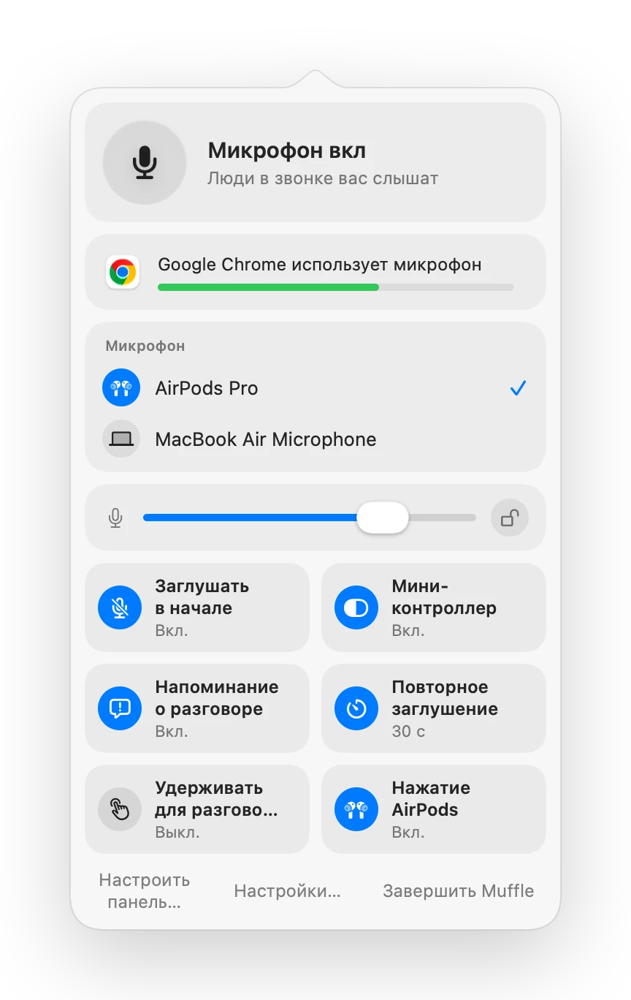
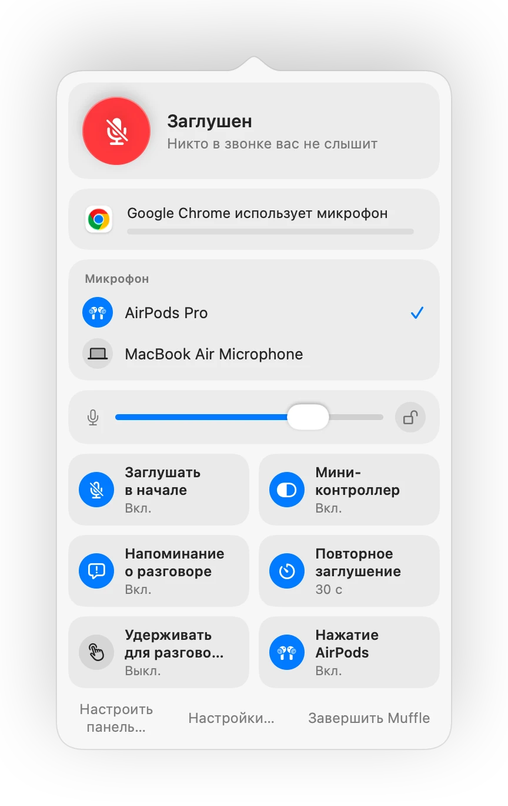
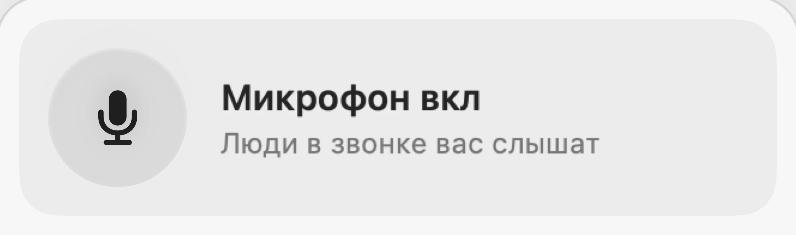
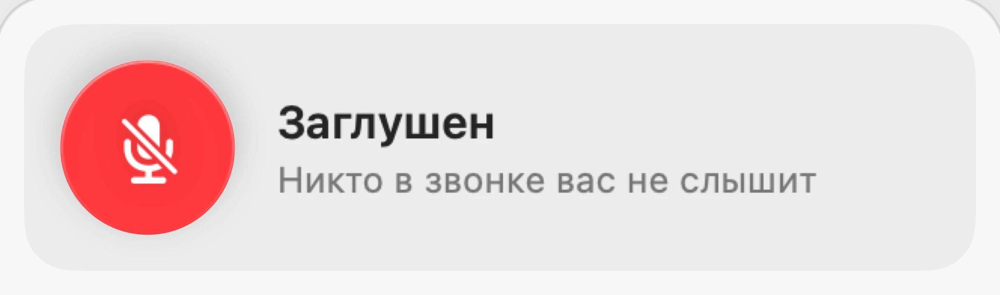
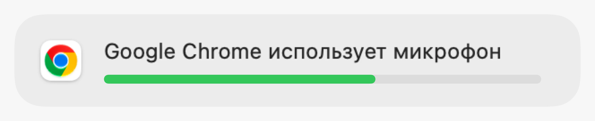
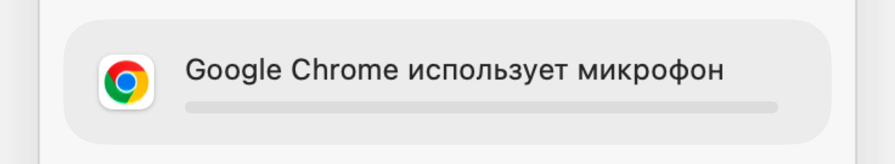
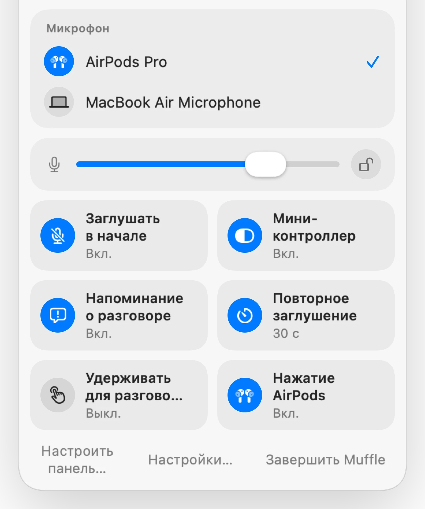
Muffle для Mac
Нажмите наушники AirPods или используйте сочетание клавиш. Muffle отключает сам микрофон, поэтому в Google Meet, Zoom, Teams, Slack и любых других сервисах будет тишина.
Бесплатно 3 дня. Затем один платёж, без подписки. Для macOS 14 Sonoma и новее.
Нажмите кнопку, нажмите AirPods или используйте сочетание клавиш. Muffle отключает сам микрофон, поэтому любое приложение слышит тишину.
Заглушайте микрофон, выбирайте устройство, блокируйте его уровень и переключайте функции прямо из строки меню.
Все микрофоны вашего Mac всегда под рукой. Выберите нужный, и все приложения сразу переключатся на него.
Chrome, Zoom и Teams часто сами меняют уровень микрофона. Заблокируйте его, и Muffle вернёт всё обратно.
Включайте и отключайте функции прямо из панели и выбирайте, какие из них там находятся.
Большинство кнопок заглушают звук только в одном приложении. Muffle отключает сам микрофон, поэтому все приложения на вашем Mac слышат тишину.
Выберите значок в строке меню: обычный, зелёный и красный или просто точку. Muffle может запускаться вместе с Mac.
Начинайте каждый звонок с заглушённым микрофоном, включайте его после звонка, заглушайте при блокировке Mac или отключении наушников.
Нажмите для переключения, удерживайте для разговора как в рации или для мгновенного мьюта. Добавьте отдельные клавиши или клавишу для разговора, например Правую ⌥.
Выбирайте, что показывать в панели строки меню и какие быстрые переключатели разместить внизу.
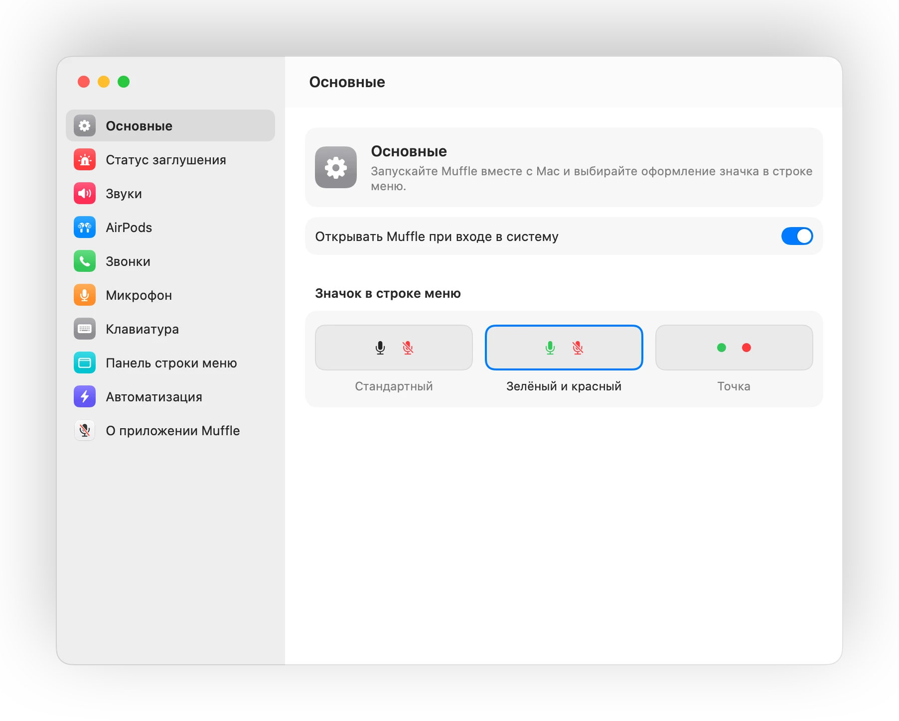
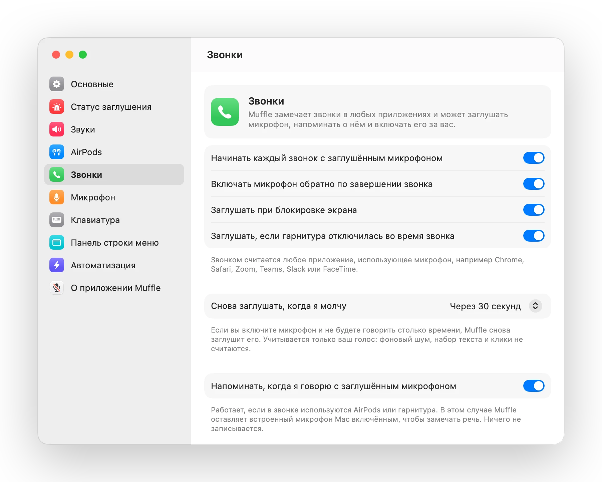
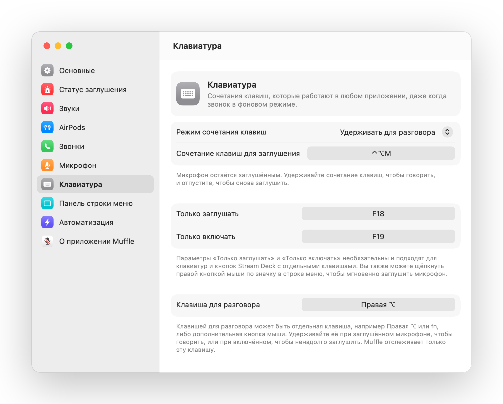
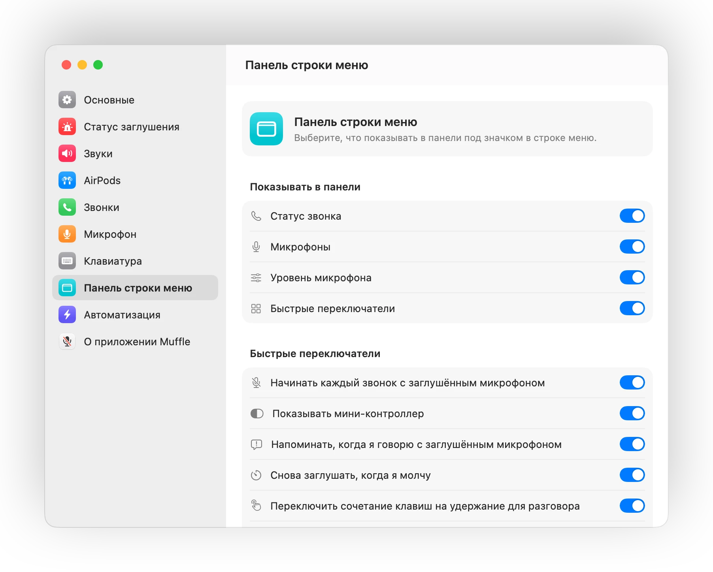
Во время любого звонка нажмите на ножку наушника, чтобы заглушить звук, и ещё раз, чтобы включить. Это работает даже в Chrome, где Google Meet и другие веб-звонки игнорируют нажатие AirPods.
Если вы начнёте говорить с заглушённым микрофоном, Muffle предупредит вас до того, как вы выскажете всю мысль в пустоту.
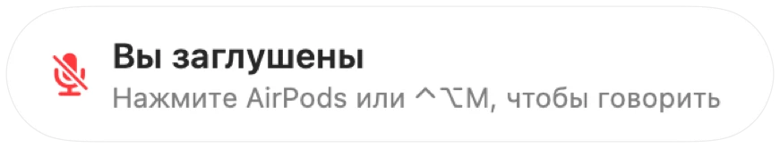
Control-Option-M заглушает звук везде, даже если звонок идёт в фоновой вкладке. Удерживайте клавиши в режиме рации, чтобы говорить, и отпустите, чтобы снова заглушить.
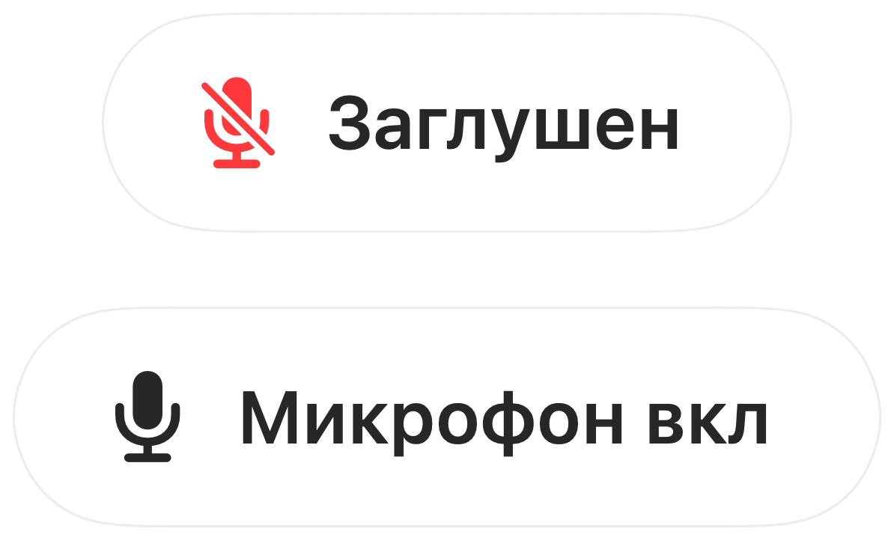
Chrome, Zoom и Teams часто сами меняют громкость микрофона. Зафиксируйте её, и Muffle вернёт нужное значение.

Небольшая плавающая кнопка показывает статус микрофона во время звонков. Нажмите на неё, чтобы заглушить или включить звук.
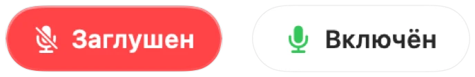
Выберите, как работает сочетание клавиш: нажать для переключения, удерживать для разговора или удерживать, чтобы ненадолго заглушить микрофон. Назначьте отдельные клавиши для заглушения и включения или удерживайте одну клавишу, например Правую ⌥ или дополнительную кнопку мыши.
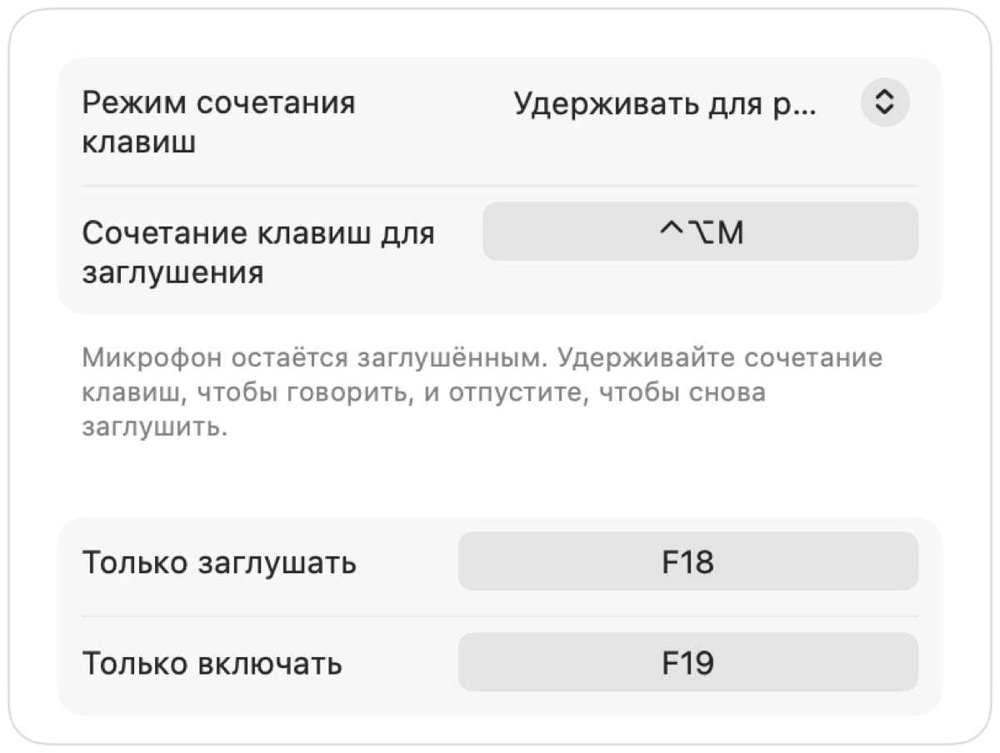
Включили микрофон, чтобы сказать пару слов? Если вы помолчите выбранное время, Muffle снова заглушит его. Учитывается только ваш голос, а не набор текста или фоновый шум.
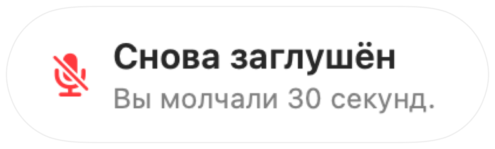
Если вы в AirPods в тихой комнате, Muffle предложит микрофон Mac, и тогда наушники AirPods воспроизводят звонок в полном качестве. Когда станет шумно, приложение предложит микрофон AirPods.
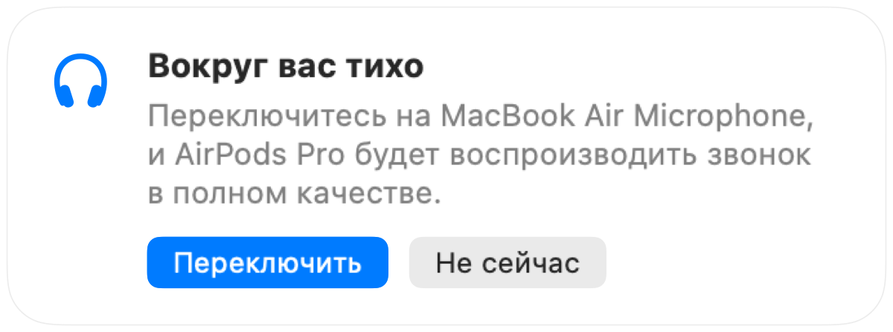
Выбирайте «Начинать каждый звонок с заглушённым микрофоном», включайте микрофон обратно по завершении звонка и заглушайте звук при блокировке Mac.
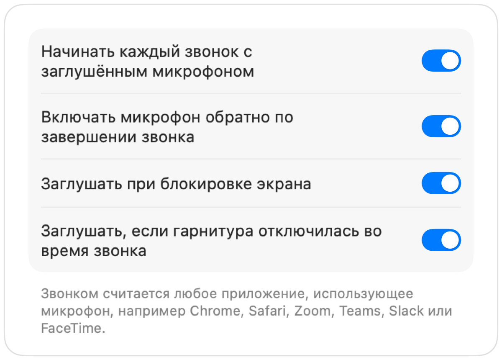
Если гарнитура отключится во время разговора, Muffle вовремя заглушит звук, пока звонок не переключился на встроенный микрофон Mac со всеми шумами комнаты.
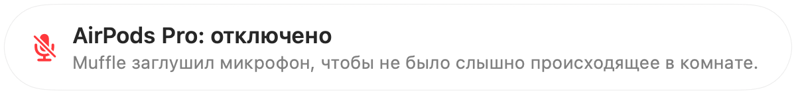
Управляйте заглушением через приложение «Быстрые команды», Siri, Stream Deck, Raycast или отдельную кнопку в Пункте управления.
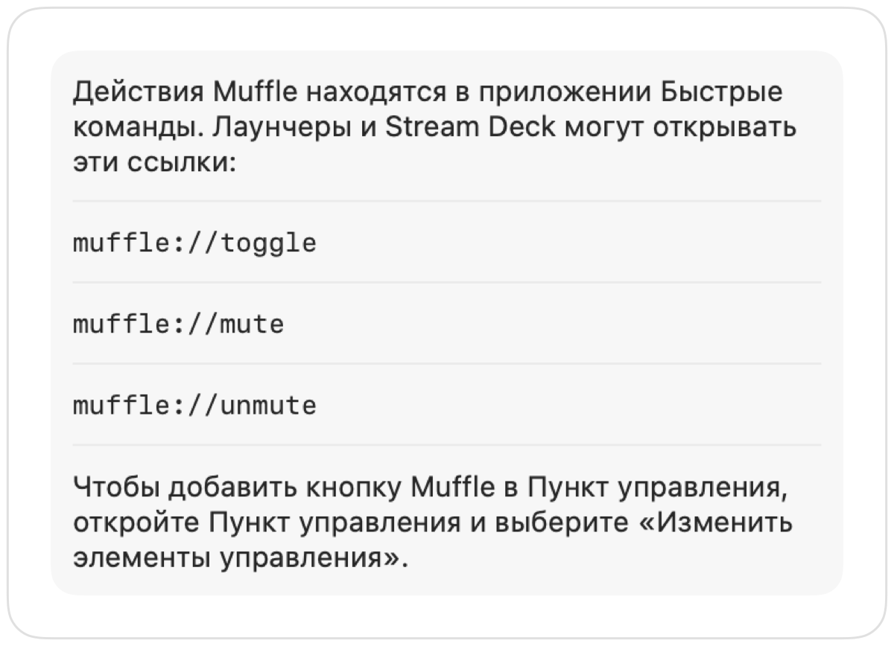
Зелёная или красная подсветка краёв экрана, цветной значок в строке меню, плавающая кнопка и звук, который можно отключить для каждого микрофона. Включите то, что удобно вам.
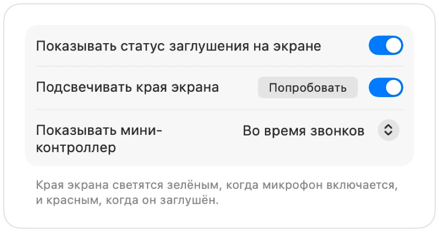
Muffle никогда не записывает, не хранит и не отправляет звук. Он только включает и выключает микрофон и считывает уровень громкости. В приложении нет учётных записей, аналитики и отслеживания.
Установите Muffle из Mac App Store и разрешите доступ к микрофону.
Присоединитесь к звонку в любом приложении, как обычно.
Нажмите AirPods, используйте Control-Option-M или щёлкните по значку в строке меню, чтобы заглушить звук.
Да. Chrome не передаёт нажатие на ножку AirPods веб-звонкам, поэтому Muffle перехватывает его и отключает сам микрофон. То же самое касается любых звонков во вкладках браузера.
В приложении для звонков микрофон может отображаться как включённый, так как Muffle отключает сам микрофон на Mac, а не кнопку в программе. В любом случае собеседники услышат только тишину. Когда звук отключён, значок Muffle в строке меню становится красным.
AirPods Pro, AirPods 3 и новее, AirPods Max, а также модели Beats с поддержкой управления звонками. Сочетание клавиш и строка меню работают с абсолютно любым микрофоном.
Да. Muffle совместим со всеми приложениями на Mac, использующими микрофон, включая как отдельные программы, так и веб-конференции в браузере.
Нет. Попробуйте все функции бесплатно в течение 3 дней, а затем разблокируйте Muffle разовой покупкой.
macOS передаёт нажатия AirPods только тем приложениям, которые используют микрофон, поэтому Muffle держит открытым бесшумное соединение во время звонков. Никакой звук не записывается.
При завершении работы Muffle снова включает микрофон, поэтому вы не останетесь без звука.
macOS 14 Sonoma и новее. Для кнопки в Пункте управления требуется macOS 26 или новее.
Да. Выберите «Удерживать для разговора» в Настройках и зажимайте сочетание клавиш, чтобы говорить. Можно также удерживать одну клавишу, например Правую ⌥ или fn, либо дополнительную кнопку мыши.
Когда во время звонка используется микрофон AirPods, наушники переходят в режим вызова, передающий звук в низком качестве. В тихом помещении Muffle предлагает микрофон Mac, поэтому AirPods продолжают звучать в полном качестве.
Нет. Muffle распознаёт речь с помощью встроенного в систему анализа звука от Apple, поэтому учитывается только разговор. Набор текста, клики и фоновый шум не влияют на работу, и звук нигде не записывается.
Короткие практические ответы о том, как заглушать микрофон на Mac в любых приложениях.
Попробуйте Muffle бесплатно в течение 3 дней.